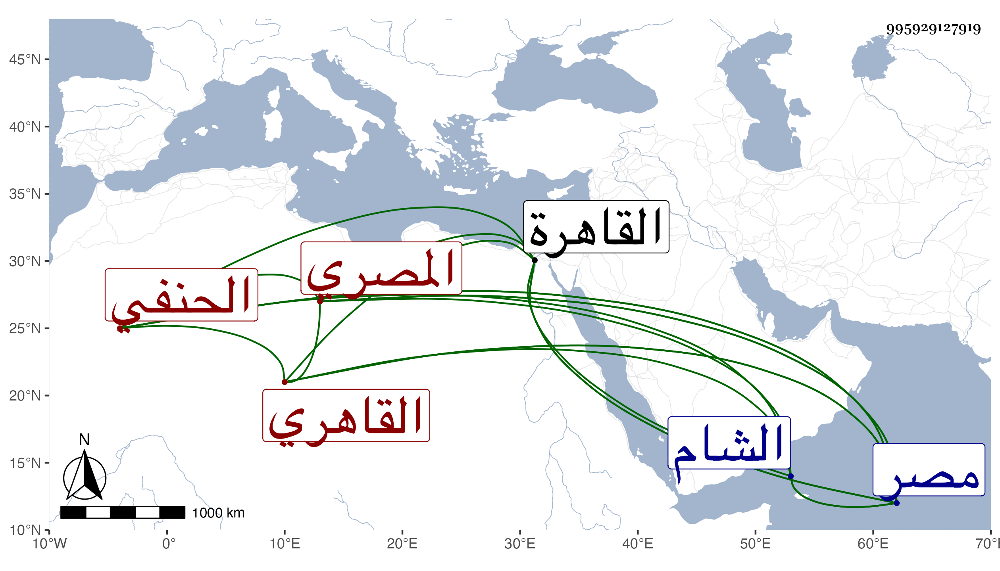

0902Sakhawi.DawLamic.ITO20230111-ara1.EIS1600.995929127919
Biography ID: 995929127919
472
عبد الرحيم بن محمد بن عبد الرحيم بن علي بن الحسن بن محمد بن عبد العزيز ابن محمد العز أبو محمد بن المؤرخ ناصر الدين بن العز أبي الفضل بن الفرات المصري القاهري الحنفي الآتي أبوه ويعرف كسلفه بابن الفرات باسم النهر من بيت شهير . ولد سنة تسع وخمسين وسبعمائة بالقاهرة ونشأ بها فحفظ القرآن والعمدة والبداية في المذهب وغيرها وعرض في سنة إحدى وسبعين فما بعدها على جماعة من أئمة أرباب المذاهب فمن أئمة مذهبه السراج الهندي وأكمل الدين والصدر محمد حفيد العلاء بن التركماني والشمس الطرابلسي وأبو بكر بن التاجر والشمس محمد بن الصائغ ومحمد بن السكري ومن الشافعية الضياء بن سعد الله القزويني والكلائي مصنف المجموع والبلقيني وابن الملقن والابناسي ومحمد بن أحمد الشامي والبدر حسن بن العلاء علي القونوي والصدر المناوي وإسماعيل بن إبراهيم بن جماعة وعبد العزيز السيوطي ومحمد بن عثمان بن خضر ومحمد بن أبي البقاء السبكي ومن المالكية ابن مرزوق الكبير والشرف بن عسكر البغدادي وحمزة بن علي الحسيني والبرهان الاخنائي وأحمد بن عمر بن علي بن هلال الربعي ومن الحنابلة العلاء علي بن محمد الكناني والشمس الزركشي شارح الخرقي ومحمد بن عبد الله بن إبراهيم المقدسي وسليمان بن أحمد الكناني ، وأجازوا له مع غيرهم ممن تركته ممن لم يجز ، وأخذ الفقه عن قاضي مذهبه الشرف بن منصور والجمال الملطي وغيرهما وأجازه ثانيهما بالافتاء والتدريس والنحو عن المحب بن الجمال بن هشام بحث عليه شرح الشذور لوالده والبرهان الدجوي بحث عليه شرح الألفية لابن عقيل وغيرهما والحديث عن الزين العراقي أخذ عنه شرحه لألفيته ونكته على ابن الصلاح ، وكان يصفه في التبليغ بالشيخ الإمام بل أذن له في إقرائهما وسمع عليه بعض عشارياته وغيرها بمشاركة الحافظ الهيثمي وكتب عنه كثيرا من أماليه وأثبت المملي اسمه في كثير من مجالسه وحضر دروس البلقيني الكثيرة في التفسير والحديث وغيرهما . ومما أخذه عنه بعض محاسن الاصطلاح وكذا لازم العز محمد بن جماعة في كثير من العلوم التي كانت تقرأ عليه وسمع على الحسين بن عبد الرحمن التكريتي في سنة ثلاث وثمانين وسبعمائة البعث لابن أبي داود ومنتقي من ذم الكلام للهروي وعلى قاضي مذهبه المجد إسماعيل الحنفي وأبي علي المطرز والجمال الرشيدي الجزء الرابع والخامس من أبي داود في سنة تسعين ووصف في الطبقة بالقاضي وعلى المجد وحده كتاب الأربعين الجهادية لابن عساكر وعلى والده الشفا بفوت يسير وعلى الجمال عبد الله بن العلاء الحنبلي وغيرهم ، وذكر لي غير مرة أنه سمع البخاري على البهاء أبي البقاء السبكي ، وبالجملة فلم نجد له سماعا على قدر سنه بلى قد أجاز له خلق انفرد بالرواية عن أكثرهم في الدنيا فأجاز له في عاشر شعبان سنة خمس وستين العز أبو عمر بن جماعة فهرست مروياته بالسماع والاجازة وهو بخط عم والده عبد الخالق بن علي وأرسل شيخنا بذلك ورقة بخطه لصاحب الترجمة كانت عنده أوردتها في موضع آخر ، وأجاز له قبل ذلك في استدعاء آخر مؤرخ بسابع ذي الحجة سنة إحدى وستين وجماعة وفي آخر بذي الحجة سنة ثلاث وسبعين خلائق وبآخر شعبان سنة خمس وتسعين طائفة ، وممن أجاز له من الأعيان الشهاب بن النجم والبدر بن الجوخي وزغلش وست العرب وابن أميلة والشحطبي والبياني وابن عطاء الله الحنفي والصلاح بن أبي عمر وابن بشارة وغيرهم من أصحاب الفخر وأحمد بن عبد الكريم بن أبي الحسين البعلي وإبراهيم بن أحمد بن إبراهيم بن فلاج السكندري والزيتاوي والقيراطي والصفدي والتاج بن السبكي والكرماني والسوق والمنبجي وعلي بن إبراهيم الصهيوني ، وعدة من أجاز له نحو من مائتي نفس وثلاثين نفسا خرج له صاحبنا النجم بن فهد عن أكثرهم مشيخة لم يتيسر له الارسال بها إلينا ، وناب في القضاء سنة إحدى عشرة عن الأمين الطرابلسي فمن بعده بل الظاهر أنه ناب عن المجد إسماعيل فقد وصف كما قدمناه بالقاضي في طبقة سماع عليه ، وحج في سنة ست وعشرين وعمل تصنيفا في ترك القيام سماه تذكرة الأنام في النهي عن القيام فرغه في سنة ثلاث عشرة وثمانمائة وكذا لخص مسائل شرح منظومة ابن وهبان في المذهب وسماه نخبة الفوائد المستنتجة من كتاب عقد القلائد في حل قيد الشرائد ونظم الفرائد وكان تلخيصه له في سنة ست عشرة إلى غير ذلك من المجاميع والفوائد ، وحدث بالكثير وقصر أصحابنا في عدم الاكثار عنه كصنيعهم في غيره من المسندين وأما أنا فلازمته كثيرا بحيث لا أعلم من حمل عنه بحمد الله أكثر مني ، وربما استعنت برسالة شيخنا إليه في ترغيبه في الاسماع وطواعيته لي في غير ذلك إذا رأيت منه مللا فيسر بذلك وكان خيرا فاضلا صدوقا ساكنا منجمعا عن الناس حريصا على الانتصاب في مجلسه لفصل القضايا والاحكام والتفرغ لذلك يقصد للاشتغال من الأماكن النائية لقدمه ومعرفته ، ورام الجماعة منه التصدي لهم من أول النهار إلى الزوال ويساعدونه في نفقة عياله بقدر له وقع فامتنع وقال لا آخذ على التحديث أجرة ولكن تقرءون على الفتح من غير تقييد بمدة طويلة ، ومتعه الله بسمعه وبصره حتى مات ، وكانت وفاته في يوم السبت سادس عشري ذي الحجة سنة إحدى وخمسين وصلى عليه بمصلى باب النصر ودفن بحوش صوفية سعيد السعداء رحمه الله وإيانا ، وقد رأيت شيخنا رحمه الله ترجمه بما نصه : وقد جاز التسعين ممتعا بسمعه وبصره وحدث بالكثير في أواخر عمره وظهرت له اجازات من مسندي ذلك العصر ممن سمع من الفخر ونحوه فانفرد عن الكثير منهم وكان قد اشتغل قديما وناب عن القاضي الحنفي ، وحدث عنه أبوه في تاريخه بأشياء أودعها إياه وقال أيضا في بعض الاستدعاءات بجانب خطه والعزحي ما نصه : سمع من أبيه وجماعة من شيوخنا المسندين وسمع قبلنا من جماعة وأجاز له جمع من المسندين بالشام ومصر وحدث بالكثير وهو الآن مسند الديار المصرية انتهى كلام شيخنا في الموضعين وقرأت بخط البقاعي : وهو إنسان جيد فاضل متثبت محمود السيرة في قضائه من بيت علم قال وصنف أشياء دلت على جودة ذهنه وضعف عربيته وقصور عبارته كذا قال .
